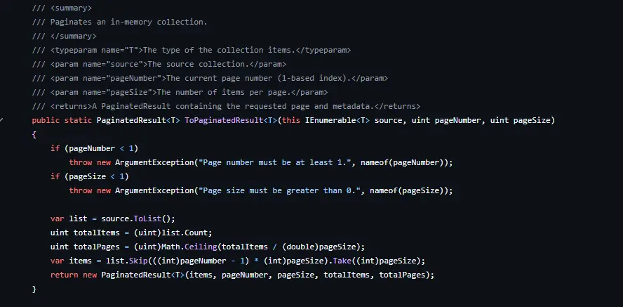
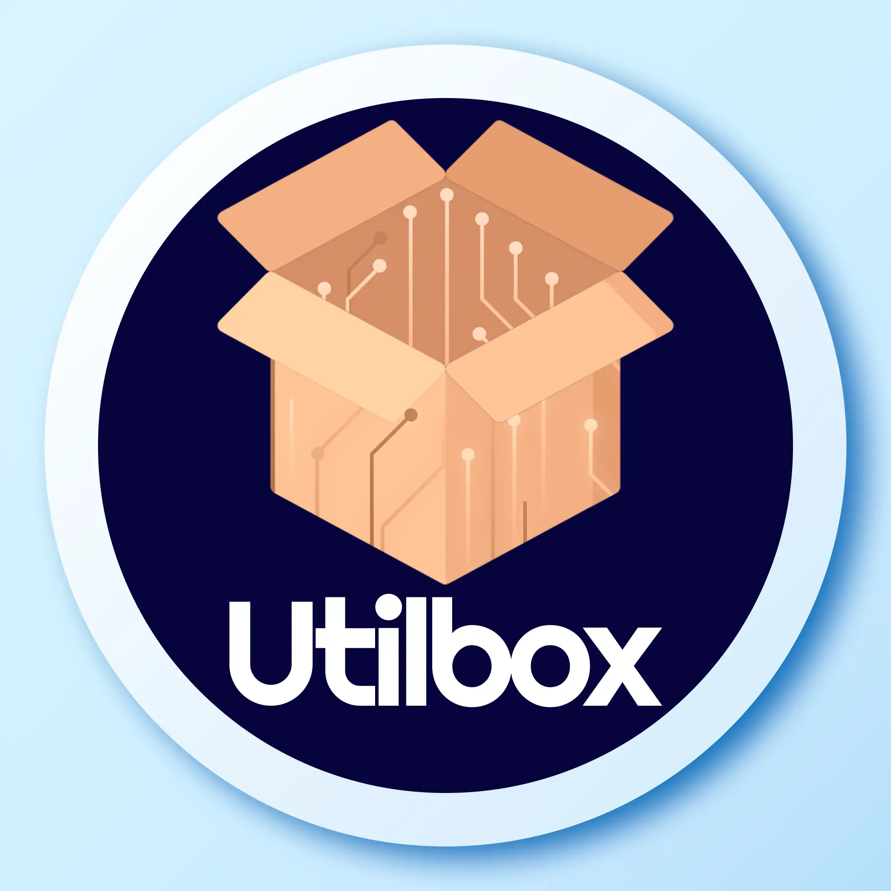
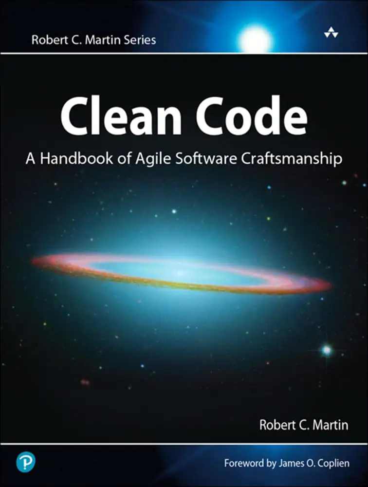
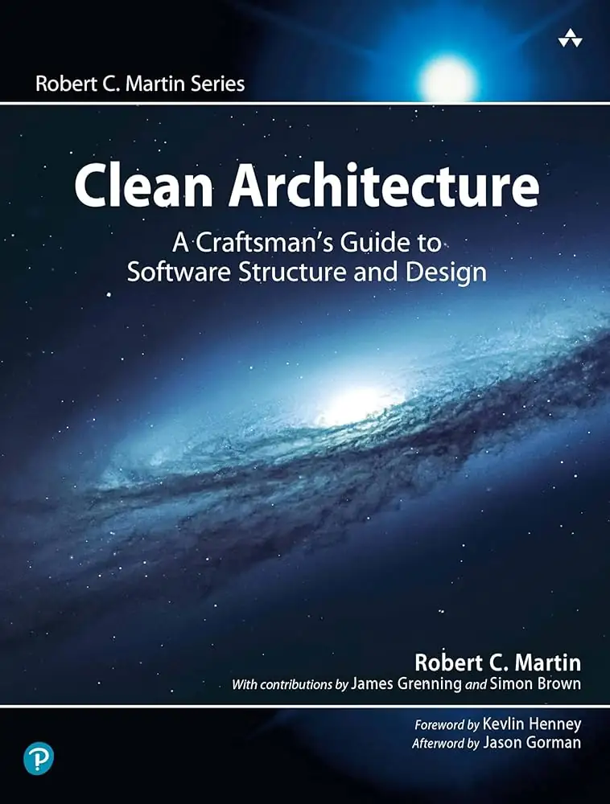
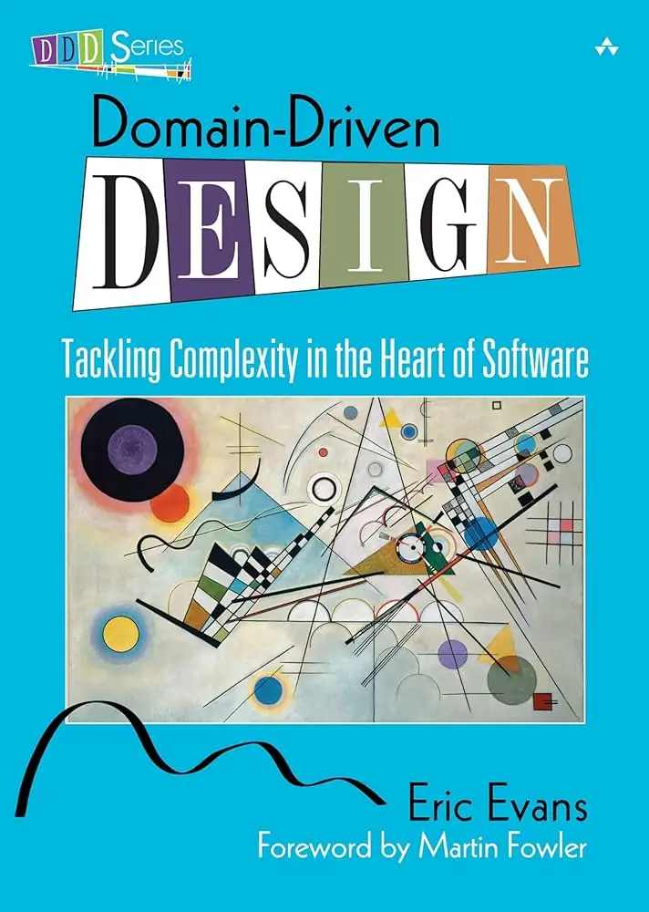
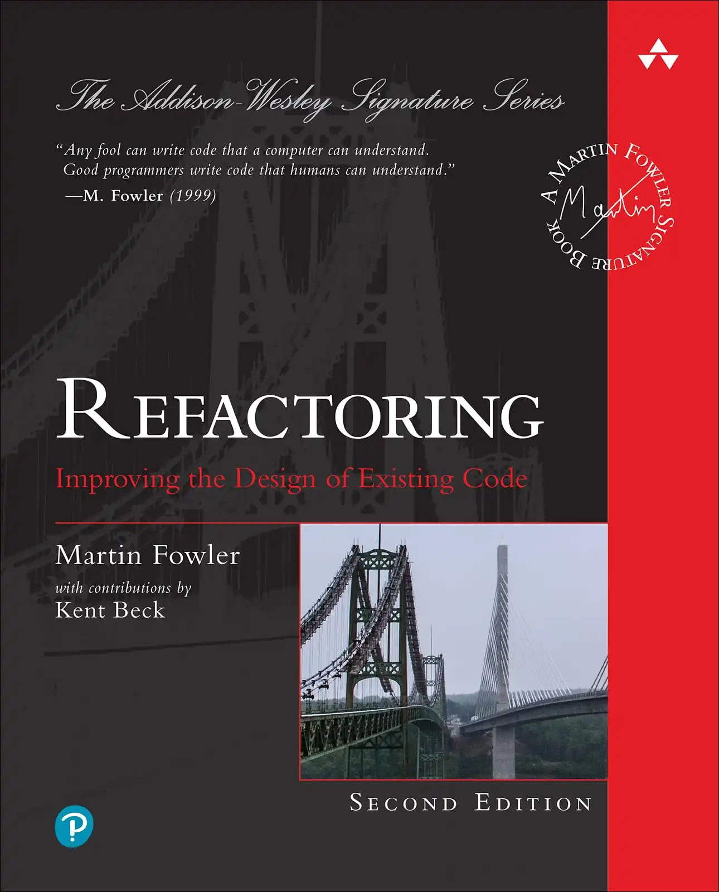
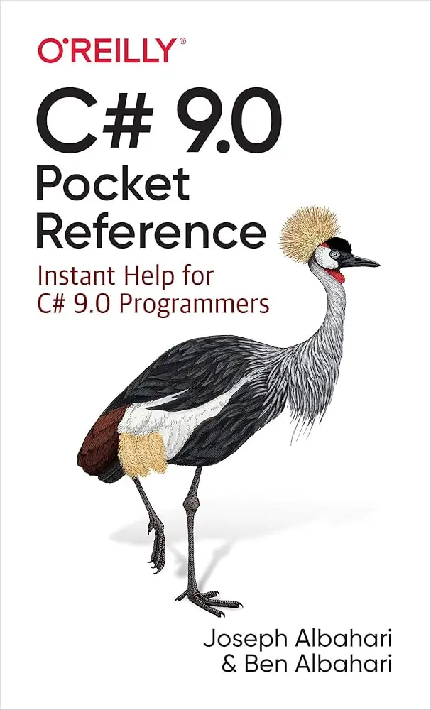

Sobre mim
Olá, sou Rafael, um engenheiro de software sênior com mais de 8 anos de experiência, especializado em desenvolvimento .NET e arquitetura de software. Sou apaixonado por construir aplicações escaláveis e eficientes e por solucionar desafios complexos que ajudem na melhoria contínua de minhas habilidades. Sou um profissional com propósito e sólida experiência no desenvolvimento de sistemas empresariais complexos. Sou comprometido com práticas de código limpo e princípios SOLID, e possuo um histórico de entrega de soluções escaláveis e de alto desempenho.
🛠️ Habilidades Técnicas
Clique nas
categorias para expandi-las e visualizar mais habilidades.
Backend
Frontend
Bancos de dados
DevOps
Testes
Arquitetura
Qualidade de
código
Metodologias
Outras
habilidades
💼 Carreira
Engenheiro de Software Sênior
OMIE
- Atuo na manutenção e modernização de um dos ERPs mais robustos e amplamente utilizados do Brasil, com forte foco em módulos fiscais e em sistemas impactados pela reforma tributária brasileira.
- Trabalho contribuindo para a migração de funcionalidades desenvolvidas com ferramentas visuais legadas (CoreBuilder) para arquiteturas web modernas, com grande ênfase em performance, estabilidade e compatibilidade retroativa.
- Contribuo ativamente para a otimização de consultas em banco de dados, incluindo análise de planos de execução, criação e ajuste de índices e refinamento de queries críticas de performance.
- Atuo próximo aos processos fiscais e de gestão empresarial, incluindo controle de estoque, compras, vendas e fluxos tributários, garantindo conformidade com regras de negócio e requisitos legais.
Desenvolvedor .NET Sênior
CWI (Consultoria) • Bankly
- Atuei na modernização de código legado para um banco digital brasileiro em crescimento, contribuindo para a evolução de uma arquitetura monolítica para padrões baseados em microsserviços.
- Participei da migração e reestruturação de componentes do sistema, apoiando a adoção de soluções escaláveis, resilientes e orientadas à nuvem.
- Contribuí na implementação e manutenção de AWS Lambda e na definição de infraestrutura como código utilizando Terraform.
- Atuei com filas de mensagens e eventos assíncronos, além da implementação de mecanismos de segurança (antifraude) para o setor financeiro.
Desenvolvedor .NET Especialista
Gestionna (Consultoria) • Eicon
- Integrei uma squad responsável pela modernização de um ERP do setor público voltado à gestão educacional municipal, contribuindo para a migração de uma arquitetura legada em .NET Framework (WebForms) para .NET 8.
- Atuei na análise técnica de recursos, funcionalidades e regras de negócio entre os módulos do sistema, apoiando a definição e execução do plano de migração.
- Participei ativamente da migração de aproximadamente 50 módulos do ERP, realizando refatoração e limpeza de código legado, aplicando Clean Code e princípios SOLID.
- Atuei na mitigação de riscos de segurança, melhoria da performance de consultas ao banco de dados e desacoplamento de dependências entre classes.
Engenheiro de software sênior
Grupo Fast
- Aprimoramento e desenvolvimento de um sistema de gerenciamento de ponta para uma rede de clínicas de depilação a laser em rápida expansão, melhorando significativamente a eficiência operacional.
- Importantes tomadas de decisão em design, arquitetura e regras de negócios, sendo um membro central do direcionamento do produto e fornecendo propostas baseadas em experiência profissional e acadêmica para o futuro do produto.
- Integrações com vários serviços de terceiros, modernização de arquitetura legada, otimização de performance para consultas, procedures, triggers e funções de banco de dados e aprimoramento de experiência e desempenho do sistema para dar suporte ao crescimento do negócio.
- Reformulação do site institucional principal com tecnologias .NET modernas e suporte a vários idiomas, melhorando o desempenho bruto e de SEO e a experiência do usuário.
- Implementação de descoberta de lacunas de agendamento do sistema principal com parâmetros personalizados, reduzindo significativamente o tempo de operação de agendamento de clientes e usuários, reduzindo reclamações de clientes e melhorando a utilização do tempo comercial.
Desenvolvedor .NET Pleno
Fast Escova Franchising
- Líder de planejamento e desenvolvimento de um novo sistema de gerenciamento para uma franquia de clínicas de procedimentos estéticos, simplificando o agendamento de consultas, o gerenciamento de estoque e a supervisão operacional.
- Projeto de arquitetura do sistema, estrutura do banco de dados, usando arquitetura limpa, DDD, .NET Core e princípios SOLID, garantindo escalabilidade, manutenibilidade e segurança de longo prazo.
- Gestão uma pequena equipe de desenvolvedores autônomos, delegando tarefas, revisando o código e garantindo a adesão às melhores práticas e objetivos de negócios.
- Desenvolvimento de APIs seguras para sincronização de dados em tempo real entre várias clínicas e o franqueador, simplificando os processos de negócios e centralizando o gerenciamento de dados.
- Desenvolvimento de um robusto sistema de estoque e insumos para venda de produtos e controle de estoque de insumos de produtos utilizados nos procedimentos, melhorando a visão do estoque e diminuindo gastos.
Desenvolvedor .NET Pleno
MedicMais Franchising
- Líder de planejamento e desenvolvimento de um novo sistema de gerenciamento para uma franquia de planos de saúde, automatizando operações clínicas, gerenciamento de registros médicos e agendamento de consultas.
- Projeto de arquitetura do sistema, estrutura de banco de dados, decisão de tecnologias escolhidas e stack do projeto.
- Desenvolvimento de uma agenda médica interativa multivisualização com sincronização em tempo real, melhorando significativamente a eficiência do agendamento e a coordenação da equipe médica.
- Gestão de uma pequena equipe de desenvolvedores autônomos, supervisionando os esforços de desenvolvimento e garantindo a entrega de soluções de software escaláveis e de alta qualidade.
- Implementação das melhores práticas de segurança, incluindo armazenamento seguro de dados e integrações seguras de API, garantindo a conformidade com os regulamentos de saúde.
Desenvolvedor .NET Júnior
Instituto da Construção
- Responsável pela melhoria de um sistema de gestão para uma franquia de escolas com cursos na área da construção civil, melhorando os fluxos de trabalho operacionais, acelerando processos e aumentando a adesão aos cursos.
- Otimização de consultas e relatórios de banco de dados para melhorar o desempenho do sistema, reduzindo o tempo de execução de consultas e melhorando a eficiência de obtenção de dados de relatórios.
- Integração com gateways de pagamento para operações de pinpad - um método de pagamento mais adotado pelo público-alvo - aumentando as vendas.
- Otimização de processo de agendamento por turmas para controle de aulas, salas, professores e alunos, evitando colisão de horários e melhorando a disponibilidade de datas e horários.
Analista de suporte
Resolve Franchising
- Suporte técnico e treinamento para usuários e franqueados em três marcas de franquia, aumentando a adoção dos usuários à usabilidade do sistema e prevenindo problemas de operação.
- Consultas de banco de dados e análise de anomalias para resolver problemas do sistema, atuando como ponte entre usuários finais e desenvolvedores para aprimoramentos de recursos de sistema.
- Composição de documentação para sistemas existentes e novos recursos, mantendo a operação atualizada com mudanças e melhorias.
Assistente administrativo
De Rose Comércio e Representações LTDA
Rotinas de escritório, faturamento e notas fiscais eletrônicas.
🎓 Educação
Engenharia da computação
BachareladoUNORTE - Centro Universitário do Norte de São Paulo
Programa de iniciação científica: Programa de iniciação científica: utilização de galvanômetro como componente eletrônico em harpas laser.
Tese: Estudo comparativo do algoritmo de rastreamento de caminho A* versus algoritmo genético de aprendizado de máquina na automação de robôs de armazém.
Técnico em informática
Nível técnicoETEC Philadelpho Gouvêa Netto
Tese: Software empregado em automação de bancas de jornais.
📑 Projetos


Utilbox
Uma coleção de bibliotecas de utilidades em C# projetadas para simplificar tarefas comuns de desenvolvimento. Com pacotes individuais para lidar com datas, enums, resultados, strings e paginação, o Utilbox é feito para desenvolvedores que desejam escrever código sem a necessidade de reinventar a roda.
📒 Cursos
Balta.io
|
Fundamentos da orientação a objetos Encapsulamento
Herança
Polimorfismo
Abstração
Objetos
|
4.1horas |
|
Fundamentos do C# .NET
Runtimes
SDK
Modificadores de acesso
Tipos primitivos
Classes
Structs
Records
Datas
Arrays
Exceptions
|
12.2horas |
|
Fundamentos do Entity Framework Code First
Database First
DataContext
Mapeamento
Migrações
Tracking
Operações
Transações
|
4.5horas |
|
Fundamentos dos microsserviços Protocolos
Contratos
Distribuição
Circuit Breaker
Retry Pattern
Gateway
Segurança
Escala
|
2.0horas |
|
Aplicações Mult-Tenant com Entity Framework Core Múltiplas aplicações
Múltiplos bancos
Múltiplos projetos
Regras de negócio
|
1.2horas |
|
Modelando Domínios Ricos Linguagem ubíqua
Sub-domínios
Contextos delimitados
Design por contratos
Validações de falha rápida
Queries
Handlers
|
4.5horas |
Udemy
|
Software Architecture & System Design Practical Case Studies |
4.0horas |
🌐 Idiomas
|
|
Português Brasileiro |
Nativo |
|
|
Inglês |
Fluente |
📘 Prateleira
Livros que considero importantes em minha formação e dia a dia como desenvolvedor de software e que mantenho na minha escrivaninha.





🤓 Interesses
Tecnologia
Gosto de programar, ler e aprender coisas novas. Estou sempre em busca de novas tecnologias, novos desafios e de me manter atualizado nesse mundo em constante evolução. Tenho interesse em tudo que envolve computadores, incluindo hardware mas principalmente software, e nos últimos tempos venho me aventurando com a utilização de Inteligência Artificial executada localmente para automação de tarefas, geração de imagens, som, etc. Nas horas vagas busco me envolver em projetos pessoais de software para estudo e desenvolvimento pessoal e profissional.
Ciência
Gosto de tudo relacionado a ciência, principalmente astronomia. Assuntos como mecânica quântica, física e matemática também me encantam e despertam meu interesse. Parte desse amor por ciência é traduzido no código, onde procuro sempre me apoiar nas boas práticas e técnicas já estabelecidas que os textos acadêmicos apresentam. Gosto de me ater a processos bem definidos e seguí-los para entregar código com a melhor qualidade possível.
Comunicação
Tanto no ambiente pessoal quanto no ambiente profissional, gosto de cultivar diálogo aberto e sincero como forma de manter um ambiente sadio e aprender. Gosto muito de receber feedback sobre o meu trabalho e sempre busco formas de melhorar ou me adaptar à cada situação. Sou uma pessoa que aprende rápido. Também gosto de mediar diferentes pontos de vista e encontrar uma solução em comum.
Trabalho em Equipe
Gosto de trabalhar em equipes com objetivos de crescimento e aprendizado em comum. Procuro sempre manter um bom e cordial relacionamento com todos. Apesar de me considerar introvertido, gosto de estar em contato com pessoas e diferentes opiniões. Tanto o ambiente pessoal quanto o profissional são compartilhados com outras pessoas e saber entender, respeitar e as vezes absorver outros pontos de vista nos mantém em constante evolução.
Inteligência artificial
A IA é uma ferramenta poderosa que está remodelando nossa indústria. Assim como o CAD revolucionou a engenharia, os aceleradores de IA permitem que os desenvolvedores foquem em desafios arquiteturais de alto nível e na resolução criativa de problemas.
Abraço a IA como um multiplicador de produtividade. Ela auxilia na prototipagem rápida, geração de código repetitivo e depuração, mas não substitui a compreensão profunda da lógica de negócios e das necessidades do usuário.
A essência da engenharia de software reside na empatia humana e na tomada de decisões estratégicas. A IA serve como um copiloto que lida com a rotina, nos liberando para construir soluções mais robustas e centradas no ser humano.
Estar à frente significa adaptar-se a essas novas ferramentas. Estou comprometido em utilizar a IA de forma responsável para entregar código de maior qualidade com mais rapidez, mantendo o pensamento crítico e a criatividade que definem a grande engenharia.
🌐 Contato e Redes Sociais
Vamos nos conectar!
É sempre bom estar em contato com novas pessoas. Tem alguma ideia de projeto? Quer discutir tecnologia, programação e código? Precisa de um desenvolvedor? Encontre-me nos links abaixo.